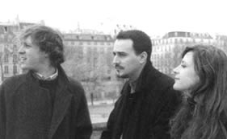
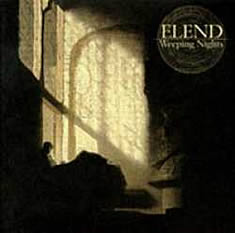
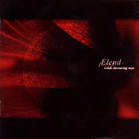

Entrevista
de Renaud Tschirner à Metalfan - Julho de 2006
Há
algum tempo, uma revista especializada em Metal, fez um review
do seu álbum de estréia Lecons de Tenebres.
Você encontrou uma explicação razoável
para que este álbum fosse citado em uma revista de Rock/Metal?
Razoável? Eu não sei... Naquele
momento, havia uma ascensão de música violenta
e opressiva e para o público isso era mais curioso que
hoje. Isto pode ser percebido facilmente com os lançamentos
do final dos anos 80 e início dos anos 90 em relação
aos imitadores de hoje. A originalidade era a idéia principal.
O latim sempre está associado
ao aspecto religioso e isso atribui um caráter sombrio
à música. Por que você escolheu usar isso
e ainda usa? Alguma vez você entendeu que a música
do Elend é religiosa?
Nós usamos o latim nos três
álbuns do Officium que assume certas normas
da liturgia católica romana. O latim era um dos elementos
que nós estabelecemos como referência. Mas eu não
compreendo como nossa música pode ser considerada religiosa.
Há uma conexão temática
entre a trilogia Officium Tenebrarum e a obra de John
Milton, Paradise Lost? Se a resposta for positiva,
eu gostaria que você nos desse mais detalhes sobre isso.
A conexão é a queda dos anjos.
Milton, do qual apenas as letras do nosso primeiro álbum
fazem referência, foi o primeiro escritor a citar a figura
de Satanás como um rebelde arquétipo. Este ponto
era a influência central para um conceito que, em caso
contrário, não tem muito em comum com Paradise
Lost.
Quando o segundo álbum (Les
Tenebres du Dehors) foi lançado, a banda era rotulada
como luciferiana. O que há de luciferiano nas
músicas? Está mais relacionado com à idéia
lírica?
"Música luciferiana" não
significa nada; mas é uma frase cativante. O mercado
da música precisa desse nivelamento. Você não
encontrará ninguém reivindicando este termo para
si. Assim, eu entendo que foi um recurso de marketing.
Nove
em cada dez pessoas consideram Les Tenebres du Dehors
seu melhor lançamento. O que, em sua opinião,
fez com que este álbum tivesse tanto impacto?
Esse impacto ocorreu em parte dos ouvintes:
aqueles que preferem um metal mais sofisticado. Nós usamos
o clássico e violões que, de certo modo, tocam
riffs de metal. Isto é claro que era planejado; mas,
até então, ninguém tinha tentado essa combinação
que atingiu um público que estava almejando isto. O mesmo
publico dirá que seu clássico favorito é
As quatro estações (Vivaldi). Isto demonstra
que o Metal não criou nada específico? Nosso trabalho
é mostrar que aquela violência pode ser manifestada
de diversas maneiras, como pode ser percebido em todos os nossos
discos.
Revolta, desolação,
ódio, raiva, frustração. Tudo tão
estético. Toda vez que escuto Les Tenebres du Dehors
eu o considero a trilha sonora perfeita para o fim do mundo.
Trilha sonora do apocalipse. Esta era sua intenção?
Eu tenho dificuldade em imaginar alguma
coisa como o fim do mundo. Dentro de um contexto, eu não
posso imaginar este álbum como uma parte isolada com
uma proposta específica que o diferiria dos outros dois.
Weeping Nights: as três
primeiras faixas manifestam muita tristeza. Somos apenas passageiros
por este mundo e ninguém consegue se tornar amigo com
o tempo? Como você gostaria de ser lembrado?
Eu não me preocupo muito em ser
lembrado ou não. Eu não quero passar minha vida
esperando pela morte.
Music For Nations era
a melhor escolha que vocês poderiam ter feito? Eu acredito
que vocês eram a única banda deste estilo na Music
For Nations.
Como muitas outras gravadoras, eles nos
queriam realmente. Apesar do resultado lamentável de
Umbersun, era única escolha inteligente que
nós tínhamos.
O casamento terminou com apenas
um álbum. Por que isto aconteceu?
Em algum momento eles decidiram "derrubar"
o álbum por razões que ainda não conhecemos.
Talvez eles tiveram que se concentrar em lançamentos
mais atraentes. Havia uma quantidade incrível de entrevistas
e reviews para nós. Mas eu acho que só vi um anúncio
para o álbum. Os distribuidores pareciam não saber
comercializar. Até onde eu sei sobre os reviews, apenas
um ou dois eram negativos. E nós nunca havíamos
feito contato com estes jornalistas, o que hoje parece ser um
procedimento comum: o departamento de promoções
cuida para que um amigo ou uma pessoa que possa elogiar faça
o review.
Mais de 20 músicos foram
convidados para o The Umbersun. Foi difícil
gravar este álbum?
Nós tínhamos trabalhado com
orquestras antes; embora nunca em um estúdio. Dominique
Brethes, o engenheiro de som, proporcionou a experiência
que nos faltava. Porém, o conhecimento dele é
responsável por uma boa parte do nosso trabalho musical.
Ele também foi que nos pôs em contato com o coral
Peter Broadbent’s.
O resultado é muito agressivo.
De onde vocês extraem tanto ódio?
Essa é uma pergunta que eu não
sei responder. Nós seguimos nossa intenção
inicial de lançar um trabalho musical com desespero extremo
e morte. Foi felizmente de acordo com nossa intenção.
Você poderia me dizer em
quais projetos musicais trabalhou no período de cinco
anos entre os lançamentos de The Umbersun e
Winds Devouring Men?
Aparte do trabalho com o Ensemble
Orphique, produzi outros materiais. Iskandar Hasnawi concetrou-se
em seu próprio projeto solo enquanto eu toquei jazz gravando
minha própria música e participando de concertos
e gravações com Korova e outros.
Observando o encarte dos álbuns,
o Elend aparenta ser uma banda de três homens desde que
Sebastien Roland está presente. Fale-me um pouco sobre
ele. O que ele acrescenta?
É essencial no nível musical.
É um engenheiro de som com ouvidos incríveis.
Não poderíamos produzir nossos álbuns sem
ele. É impossível coordenar um projeto como esse,
sozinho. Nós o conhecemos no estúdio onde gravamos
o álbum de estréia. Ele estava trabalhando como
técnico de teclado e engenheiro de som. Nós o
procuramos para a gravação do segundo álbum
e ele se uniu a nós em 1997.
2003 trouxe um contrato novo para
vocês e a promessa de pelo menos outros quatro. Prophecy
Productions foi a única oferta que vocês receberam?
Não, mas eles eram os mais rápidos
e eficientes (depois da Holy Records). Desde que nós
entendemos que seria melhor não assinar com companhias
grandes, eles pareciam a solução ideal.
Sua relação com a
Holy Records era amigável e ainda é. Por que não
escolher editar The Winds Cycle sob a assinatura deles?
Bem, nós editamos: Holy Records
é nosso licenciado para distribuição no
território francês. Prophecy faz o resto
da Europa.
Comparando
a qualquer álbum do Officium Tenebrarum, Winds
Devouring Men é mais pessoal e introspectivo. Parece
uma viagem a um universo menor e íntimo. É uma
continuação ou nós estamos falando de um
Elend novo?
Provavelmente são os dois. Ainda
está muito melhor se comparado ao que fizemos nos anos
90, apesar das diferenças óbvias em estrutura
e orquestração.
Eu sei que você odeia que
sua música seja rotulada. Mas em que ponto está
o Elend agora?
Em um ponto que não há retorno.
Eu lhe perguntarei agora algo que
está em minha mente há algum tempo: Por que a
maioria dos reviews considera seus álbuns novos "exóticos"?
Porque eles não estão acostumados
a expressões que transcendem o óbvio.
Sunwar the Dead é
evidentemente mais agressivo. Por que você escolheu expressar
toda aquela fúria sem usar vocais agressivos? Que no
passado era sua marca registrada.
Esta é exatamente a razão.
Seria errado reduzir esta característica a um mero esquema.
Nós tivemos que evitar alguns "gritos" para
criar a surpresa... mas há algum mal se não usarmos
vocal agressivo novamente?
A percussão tem um papel
essencial em Sunwar the Dead. Também dá
ao álbum um toque mais moderno, experimental. Por onde
a música do Elend está indo?
Para o rompimento absoluto.
Quando eu revejo tudo, encartes
dos álbuns e sua paixão por "leitmotivs"
música e lírico, uma palavra em particular me
ocorre: obsessão. Onde há obsessão em sua
composição?
Eu acredito que seja algum tipo de valor
fundamental. Nós não poderíamos alcançar
este trabalho sem isto.
O que podemos esperar da terceira parte de Winds Cycle?
Como você provavelmente sabe, nós
tivemos que adiar o lançamento. Isto é um pequeno
aborrecimento porque o álbum está concluído.
Houve alguns problemas e ainda o fato de sermos os primeiros
a tentar elaborar uma orquestração densa e rica
com a agressividade necessária. Nós temos que
renovar e aguardar para manter o foco onde tem que ser.
Algumas pessoas dizem que música
boa é assunto do passado. Eu acredito que eles querem
dizer que Beethoven morreu, assim como Mozart e Bach (para citar
só três exemplos). Alguém faz música
boa hoje em dia? Você poderia me recomendar alguns álbuns?
É tolice dizer que música
boa é um assunto do passado, mas como é hoje em
dia, qualidade não é prioridade.
Eu gostaria de propor um pequeno
debate. Nossos leitores apreciam isto. Vamos lá:
Richard Wagner ou Giuseppe Verdi?
Wagner, mas só
porque o Verdi é inaceitável.
Mortal
ou imortal?
Ambos: Tears
Laid in Earth e Battles in the North.
Vinho francês ou cerveja
austríaca?
Rum caribenho.
Norte
ou sul?
Leste.
Nick
Cave ou Leonard Cohen?
Cohen.
Arcanjo
Gabriel ou Lucifer?
Nunca ouvi falar
dessas pessoas.
Pablo
Picasso ou Amedeo Modigliani?
Modigliani.
Picasso não tem nenhuma coerência.
Ingmar Bergman ou Jean Luc Godard?
Jean Eustache.
Muito
obrigado. Talvez uma mensagem para nossos leitores?
Eu gostaria
de agradecer a todos, o apoio e interesse. Eu realmente apreciei
sua entrevista.
Extraída
de www.metalfan.ro
Traduzida
e adaptada por Spectrum